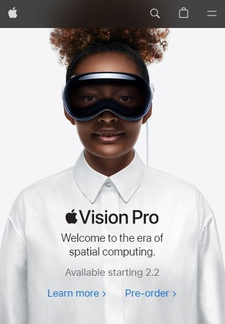
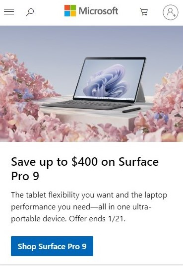
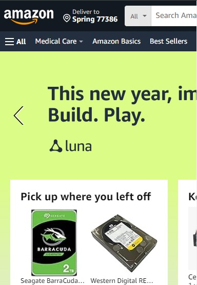

Hick's Law
look at the Apple Inc. official website
apple.com On the Apple website, users are typically presented with a limited number of main
categories, making it easy for them to navigate and find information about products, services,
and
support. The homepage often features key product highlights, and users can explore specific
product
categories with clear and concise
By limiting the number of choices and maintaining a clean design, Apple aims to enhance user
experience
and facilitate quicker decision-making for visitors seeking information or making a purchase.
This
approach aligns with the principles of Hick's Law, helping users navigate the site efficiently
without
feeling overwhelmed by excessive options.
Fitt's Law
look at the Microsoft Corp. official website
microsoft.com Fitt's Law suggests that the time required to move to a target (such as a
button or link)
is a function of the distance to the target and the size of the target. In the context of
web design, it
implies that larger and more accessible targets are easier for users to interact with. A
company that
effectively applies Fitt's Law to its website design is Microsoft.
While website designs can evolve, as of my last update, Microsoft's website is an example of
a company
that strategically incorporates Fitt's Law principles to create a user-friendly and
accessible
experience.
Contrast
look at the Amazon Company official website
amazon.com Amazon.com official website strikes a user with highcontrast white letters of
company
logo and other navbar buttons with dark-dark blue (almost black) stripe at hte very top of
the page.
Other quite contrasting colors are used through the page, like navy and pistachio
green.